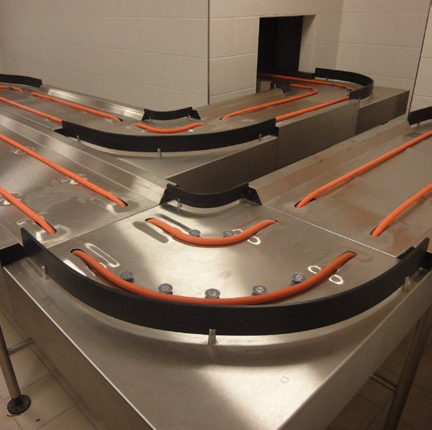
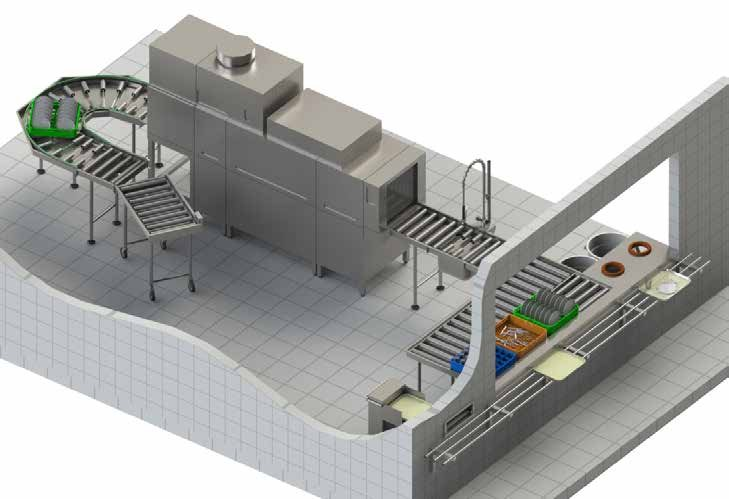
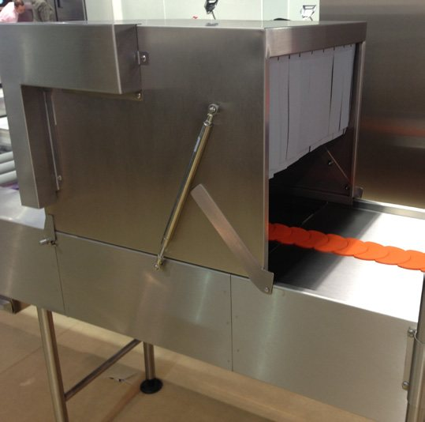
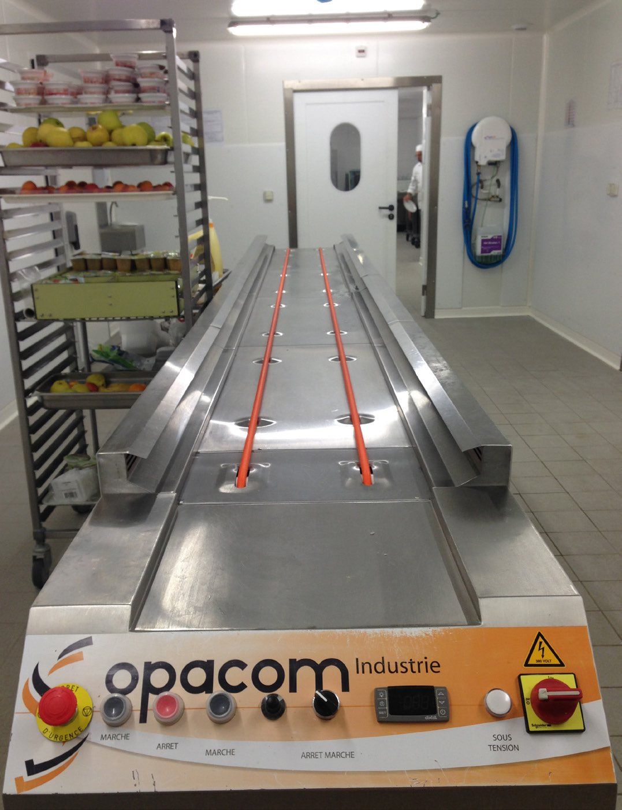
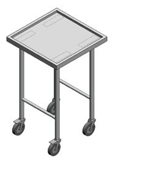

01 / Convoyeurs à cordes · dépose des plateaux
Technicord
Notre technique exclusive de convoyeurs de déposes à plateaux est sans conteste celle qui a le plus d’avantages et de garanties.
Voir la gamme →
De la dépose des plateaux au stockage des casiers, chaque gamme Sopacom répond à une étape de l’organisation d’une laverie.
Notre technique exclusive de convoyeurs de déposes à plateaux est sans conteste celle qui a le plus d’avantages et de garanties.
Voir la gamme →
Le tapis à rouleaux libres est incontournable dans les petites laveries, ainsi que pour le séchage des casiers et des paniers à la sortie machine.
Voir la gamme →
Le convoyeur à palettes est le moyen le plus efficace pour transporter les pièces lourdes sur de grandes longueurs, avec ou sans virage.
Voir la gamme →
Pour le transfert des plateaux ou des casiers d’un étage à l’autre, en liaison avec les convoyeurs linéaires, le descenseur / élévateur vertical Technilift est un dispositif particulièrement recommandé et très fiable.
Voir la gamme →
Pas une laverie de nouvelle génération ou réhabilitation n’est étudiée sans l’implantation d’une zone de tri sélectif, intégrée à la dépose plateaux ou en îlot séparé.
Voir la gamme →
Le convoyeur réfrigéré de préparation des repas permet le dressage des plateaux ou barquettes sur un convoyeur de 1 à 8 mètres linéaires, à une température de +5 / +10 °C dans une ambiance de +20 / +25 °C.
Voir la gamme →
Il n’existe pas de laverie sans tabling. Incontournable des grandes laveries, on le retrouve en entrée comme en sortie machine.
Voir la gamme →
Pour l’acheminement de la vaisselle de la salle à manger vers la laverie, comme pour le triage, un certain nombre de produits Sopacom sont indispensables, quelle que soit la technique utilisée.
Voir la gamme →